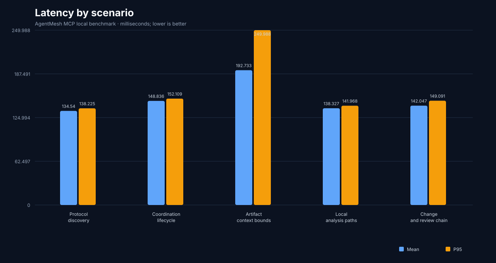
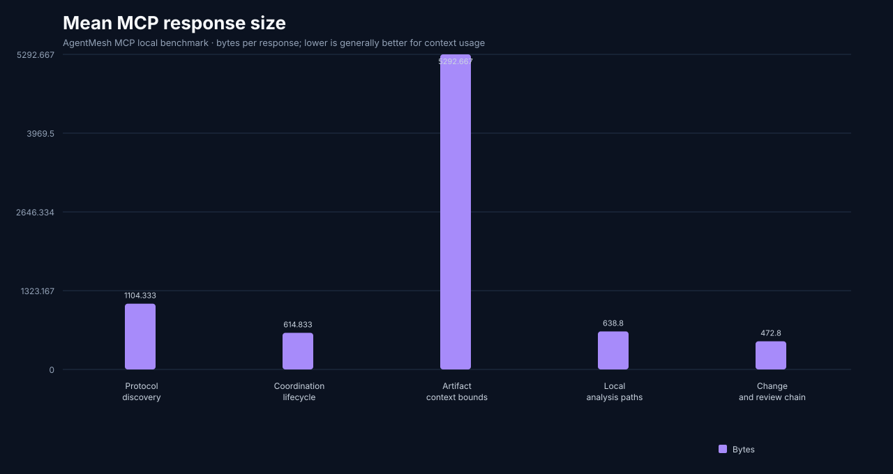
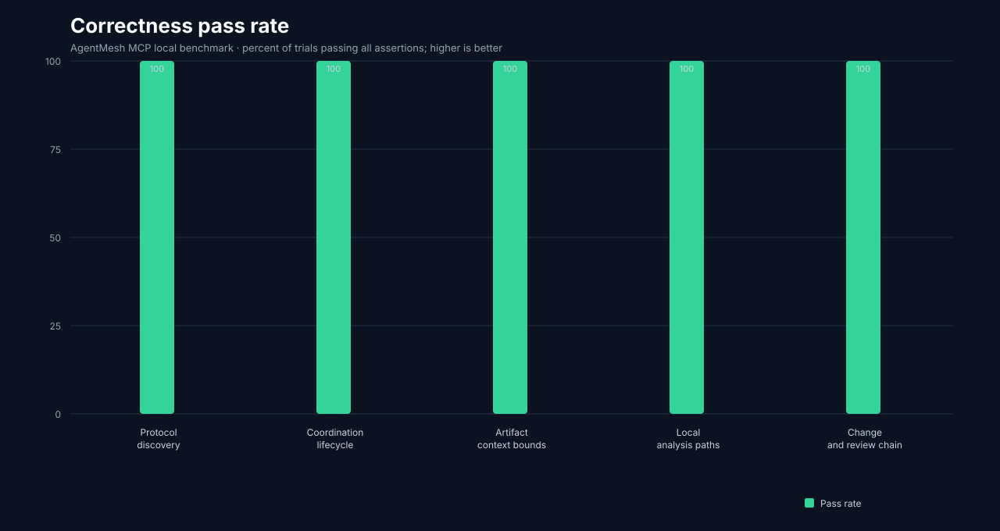

AgentMesh MCP Benchmark
Local stdio JSON-RPC benchmark generated 2026-09-12T15:14:37.975Z with 20 iterations per scenario.
| Scenario | Pass rate | Mean ms | P95 ms | Mean response bytes |
|---|---|---|---|---|
| Protocol discovery | 100% | 136.337 | 141.357 | 1166.333 |
| Coordination lifecycle | 100% | 159.209 | 168.329 | 571.913 |
| Artifact context bounds | 100% | 172.015 | 177.354 | 1140.471 |
| Local analysis paths | 100% | 143.045 | 146.131 | 527 |
| Change and review chain | 100% | 142.051 | 146.092 | 368.286 |


